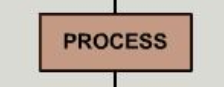
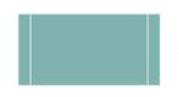
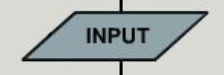
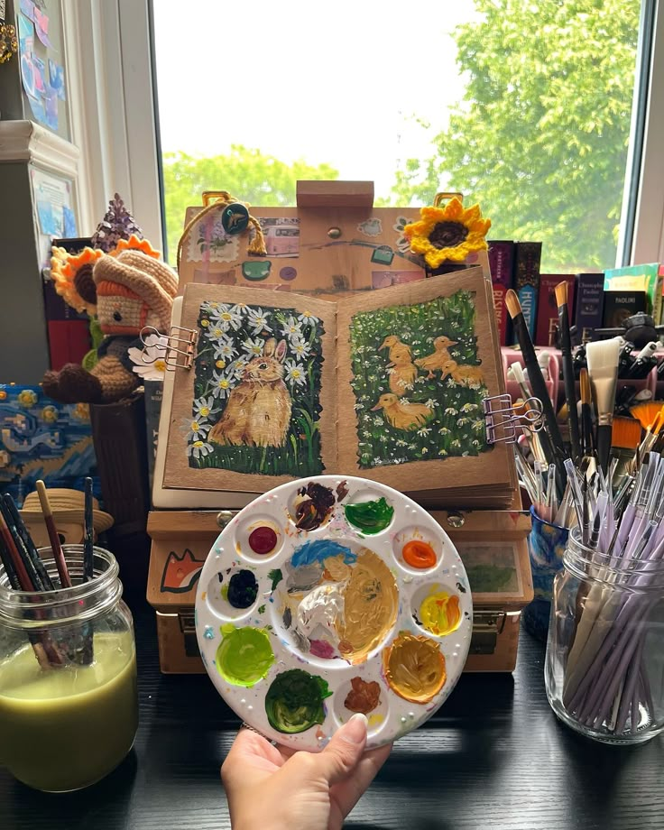
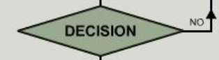
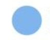
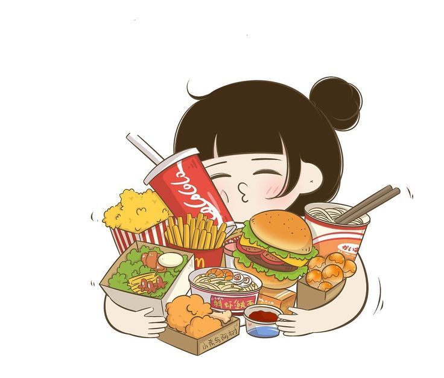
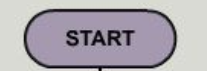

| MY FAVORITES SERIES |
MY CHILDHOOD DREAMS |
MY FAVORITE COLORS |
FLOWCHART SYMBOLS |
CHRONICLES OF NARNIA
If you want to watch, just click here. |
|
PASTEL GREEN |

•PROCESS•
Indicates any types of internal operation inside the processor or memory.

•PREDEFINED PROCESS•
Used to invoke a subroutine or an interrupt program. |
THE CASE OF BENJAMIN BUTTON
Again, click here... |
|
PASTEL PINK |

•INPUT / OUTPUT•
Used for any Input/Output(i/o) operation.Indicates that the computer is to obtain data or output result. |
WARM BODIES
Yes, click here again... |
 |
LIGHT BEIGE |

•DECISION•
Used to ask a question that can be answered in a binary format (YES / NO) TRUE or FALSE. |
CHOCOLATE FACTORY
Just click here again. |
|
DARK BLUE |

•CONNECTOR•
Allows the flowchart to be drawn without intersecting lines or without a reverse flow.
•FLOW OR ARROW• LINES
Show direction of flow. |
JUMANJI
Click here. |
 |
BLACK |

•TERMINAL•
Indicates a starting or ending of the program, process or interrupt program. |